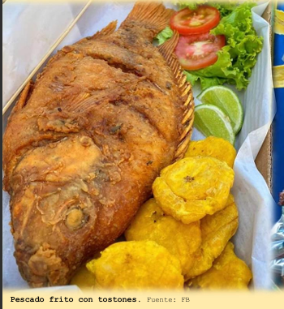
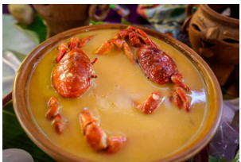
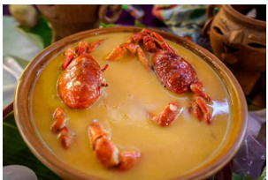
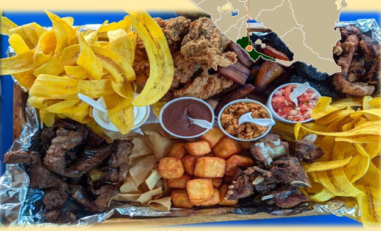
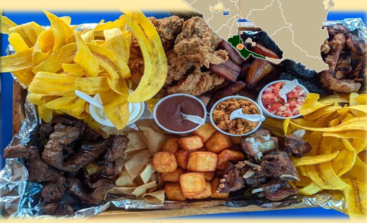
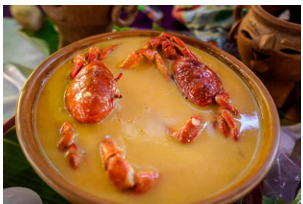
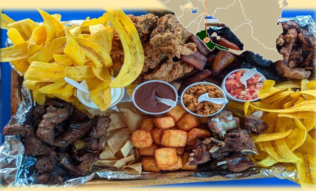

Flavors • Tradition • Culture
San Jorge Gastronomy
Discover the authentic flavors that define our identity, from lakeside dishes to century-old recipes.

 


 



Traditional Dishes
Fried fish and guapote in sauce
Black rice
"Peor es Nada"
Moros y Cristianos
Cacao pods
Traditional drinks
Local Ingredients
Lake Products
Corn and Cacao
Gastronomic Gallery